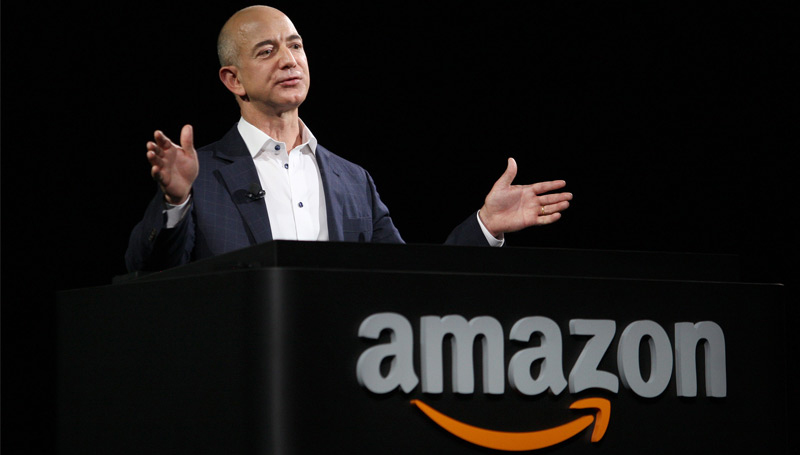

"Life's too short to hang out with people
who aren't resourceful".
Jeff Bezos

Jeff Bezos
-
Jeffrey Preston Bezos is an American technology entrepreneur, investor, philanthropist, and the founder, chairman, and chief executive officer of Amazon, the world's largest online retailer.
-
Bezos was born in Albuquerque, New Mexico, and raised in Houston, Texas. He graduated from Princeton University in 1986 with degrees in electrical engineering and computer science.
-
Worked on Wall Street in a variety of related fields from 1986 to early 1994.
-
Founded Amazon in late 1994 after writing up its business plan on a trip from New York to Seattle
-
Bezos named his new company "Amazon" after the Amazon River in South America, in part because the name begins with the letter "A," which is at the beginning of the alphabet.
-
He accepted an estimated $300,000 from his parents and invested in Amazon. He warned many early investors that there was a 70% chance that Amazon would fail or go bankrupt.
-
Although Amazon was originally an online bookstore, Bezos had always planned to expand to other products.
-
In 2002, Bezos led Amazon to launch Amazon Web Services, which compiled data from weather channels and website traffic.
-
In 2013, Amazon was named as the largest online shopping retailer in the world.
-
On March 6, 2018, Bezos was officially designated the wealthiest person in the world with a registered net worth of $112 billion. He unseated Bill Gates ($90 billion) who was $6 billion ahead of Warren Buffett ($84 billion), ranked third. He is considered the first registered centi-billionaire.